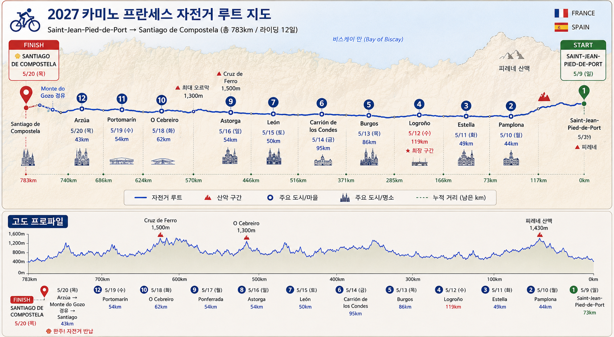

Bin(미국 Newark 출발)과 Jin(한국 인천 출발)이 5월 7일 파리에서 만나 하루 묵고, 5월 8일 기차로 생장피에드포르에 들어가 산티아고 데 콤포스텔라까지 12일간 함께 완주하는 자전거 순례 일정입니다.

스페인 북부를 동→서로 가로지르는 실제 경로입니다. 각 지점에 마우스를 올리면 날짜·구간 거리·산티아고까지 남은 거리를 확인할 수 있습니다.
위 진도 지도와 같은 방향으로, 오른쪽(생장피에드포르)에서 출발해 왼쪽(산티아고)으로 진행합니다. 첫날(5/9) 피레네(론세스바예스 고개)와 5/17 오 세브레이로 오르막이 이 여정의 두 고비이며, 메세타 구간(부르고스–레온)은 평탄한 대신 거리를 길게 잡았습니다.
거리 아래 작은 숫자는 그날 밤 기준 산티아고까지 남은 거리입니다.
| 날짜 | 일정 | 거리 |
|---|---|---|
| 5/6목 | Bin: Newark(EWR) 저녁 출발 — 야간 직항✈ 출국 | — |
| 5/7금 | Bin: Paris(CDG) 오전 도착 · Jin: 인천(ICN) 대한항공편으로 Paris 도착 — CDG 합류 후 파리 시내 숙박 (몽파르나스 역 인근 권장)합류일 | — |
| 5/8토 | Paris Montparnasse 10:05 TGV → Bayonne 14:05 → TER 14:25 → Saint-Jean-Pied-de-Port 15:26 도착 · 렌탈 자전거 수령 · 숙박기차 이동 | — |
| 5/9일 | Saint-Jean-Pied-de-Port→Pamplona — 피레네 넘기, 첫날 최대 난코스▲ 산악 | 73 km남은 710km |
| 5/10월 | Pamplona→Estella — 페르돈 고개(용서의 언덕) 경유 | 44 km남은 666km |
| 5/11화 | Estella→Logroño — 이라체 와인 샘, 리오하 진입 | 49 km남은 617km |
| 5/12수 | Logroño→Burgos — 이 여정의 최장 구간최장 119km | 119 km남은 498km |
| 5/13목 | Burgos→Carrión de los Condes — 메세타 평원 횡단 | 86 km남은 412km |
| 5/14금 | Carrión→León — 메세타 마무리, 레온 대성당 | 95 km남은 317km |
| 5/15토 | León→Astorga — 가우디의 주교궁, 짧은 회복 라이딩 | 50 km남은 267km |
| 5/16일 | Astorga→Ponferrada — 크루스 데 페로(1,500m) 넘기▲ 산악 | 54 km남은 213km |
| 5/17월 | Ponferrada→O Cebreiro — 갈리시아 관문, 최대 오르막▲ 산악 | 54 km남은 159km |
| 5/18화 | O Cebreiro→Portomarín — 사리아 통과, 100km 표지석 | 62 km남은 97km |
| 5/19수 | Portomarín→Arzúa — 갈리시아 구릉, 유칼립투스 숲 | 54 km남은 43km |
| 5/20목 | Arzúa→Monte do Gozo 경유→Santiago Cathedral 도착 · 렌탈 자전거 반납 · 산티아고 숙박⛿ 완주 | 43 km완주 783km |
| 5/21금 | Santiago 공항(SCQ) 출발 — Bin: 유럽 허브 경유 → Newark(EWR) · Jin: CDG 등 경유 → 인천(ICN), 대한항공✈ 귀국 | — |
파리 몽파르나스(Montparnasse)에서 TGV로 Bayonne까지 간 뒤, TER 완행으로 갈아탑니다. 이 일정은 5/8(토) 10:05 출발편을 기준으로 합니다 — 도착이 15:26이라 저녁 전에 자전거 수령과 마을 구경까지 여유가 있습니다.
| 몽파르나스 출발 | Bayonne 도착 | Bayonne 출발 (TER) | SJPP 도착 | 총 소요 |
|---|---|---|---|---|
| 07:54 | 12:08 | 12:36 | 13:41 | 5시간 47분 |
| 10:05✓ 선택 | 14:05 | 14:25 | 15:26 | 5시간 21분가장 추천 |
| 12:06 OUIGO | 16:11 | 17:14 | 18:18 | 6시간 12분 |
| 13:59 | 18:08 | 18:37 | 19:43 | 5시간 44분 |
순례자들에게 인기 있는 마을 기준입니다. 각 카드에 해당 날짜의 일출·일몰 시각(현지시간, 근사치)과 5월 평균 최저–최고 기온을 함께 표시했습니다. 자전거 순례자는 도보 순례자보다 늦게 체크인이 허용되는 알베르게가 많으니, 성수기(5월)에는 사설 알베르게나 오스탈 예약을 권장합니다.